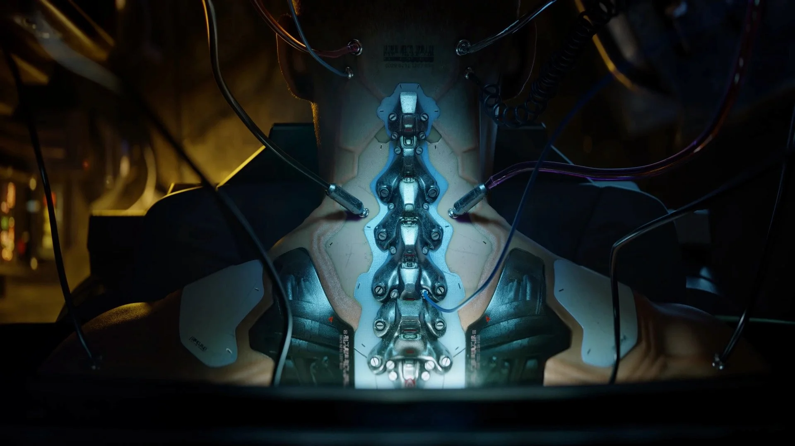
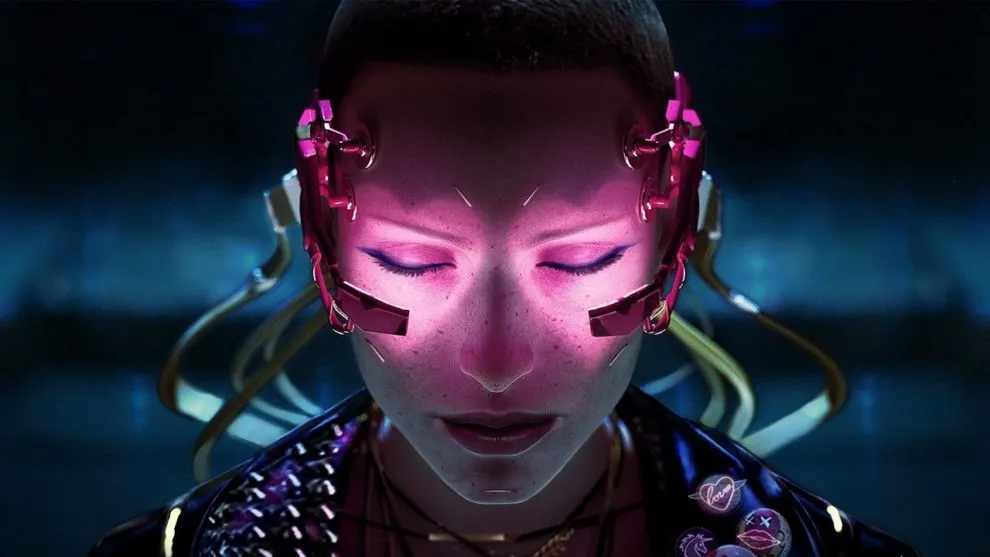
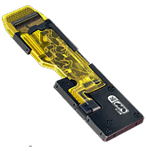
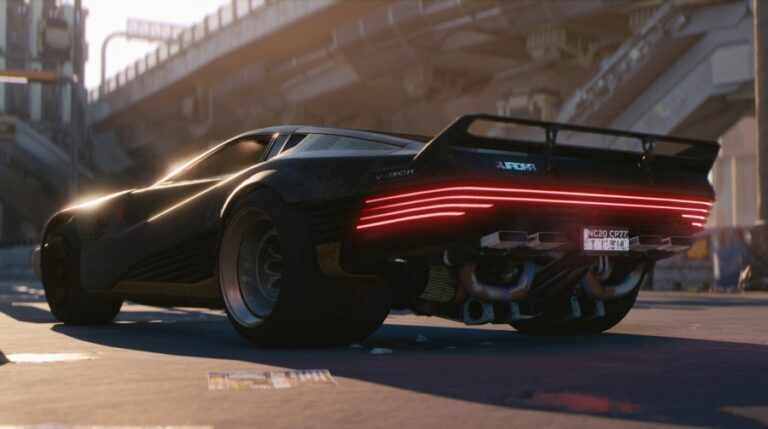
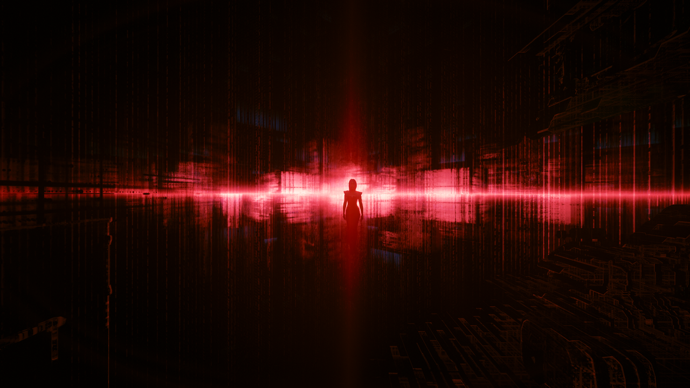

CYBERWARE
Implantes que aprimoram habilidades físicas e cognitivas dos personagens. Permitem desde aumento de força até acesso direto à rede. Esses aprimoramentos são centrais na jogabilidade e na narrativa do jogo.
BRAINDANCE
Tecnologia de realidade virtual que permite reviver experiências sensoriais de outras pessoas. Utilizada tanto para entretenimento quanto para investigações, é uma ferramenta poderosa e imersiva.
CYBERDECK
Dispositivo neural que possibilita hackear sistemas eletrônicos com a mente. Essencial para netrunners, permite desativar câmeras, manipular inimigos e acessar informações confidenciais.
VEÍCULOS
Carros autônomos e veículos voadores são comuns em Night City, refletindo um avanço significativo na mobilidade urbana e na tecnologia de transporte.
BLACKWALL
Uma barreira digital que separa a internet convencional de áreas dominadas por IAs descontroladas. Representa os perigos e limites da tecnologia no universo do jogo.